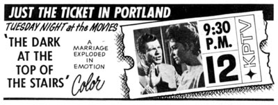

|
KPTV Ad Museum/1960-1969
A look back at print advertising from newspapers,
magazines, flyers, posters and TV Guide.
|  |
TV Guide, November 23, 1964
KPTV adopted the "Just the Ticket" slogan, after losing their
affiliation with ABC in March of 1964. With a schedule full of movies and
syndicated shows, KPTV began to "counter-program" the network
affiliates, offering theatrical movies during time-periods when other stations did not.
|
|
|
TV Guide, August 11, 1965
During the 1960s, KPTV became Portland's premiere station for local
sports broadcasts. Jimmy Jones often acted as an announcer for the action, which
included such diverse "sports" as greyhound racing.
|
|
|
TV Guide, September 15, 1966
Portland has never had much luck with professional football, but in the
1960s, it was a big deal for the home-town team to be playing a televised game. Jimmy Jones, once again, showed his versatility by calling the plays for
Portland Thunderbirds games, from Multnomah Stadium.
|
|
|
TV Guide, October 21, 1966
KPTV and Jimmy Jones knew no boundaries when it came to live sports
coverage, traveling all the way to Vancouver, British Columbia to cover the
action of a Buckeroo Hockey game.
|
|
|
Internal Sales Ad, 1969
"KPTV is where the kids are!" proclaimed this sales one-sheet
from the late 1960s. Channel 12 was the king of cartoon hosts during that decade
with Ramblin' Rod, Rusty Nails, Hobo Kelly, Dr. Zoom, Uncle Charlie and Addie
Bobkins. |
ON
TO THE 1970s...
  
This
page
last
updated
on
August 17, 2025 |